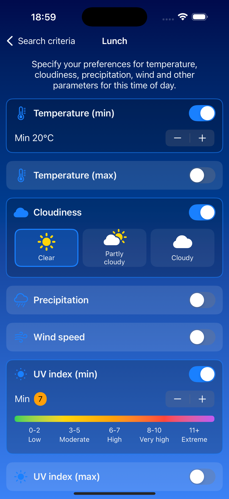
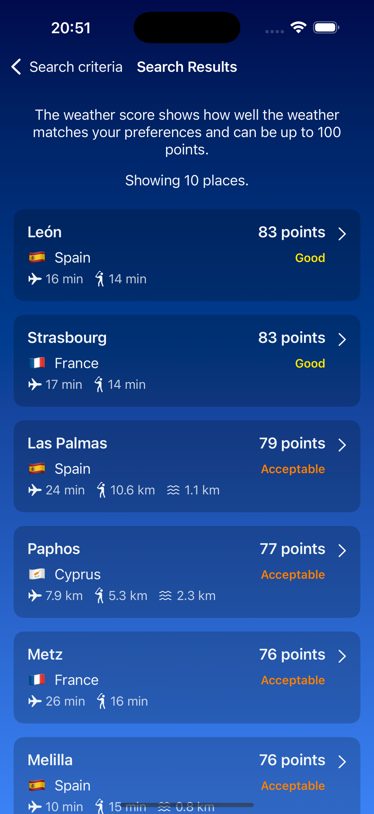
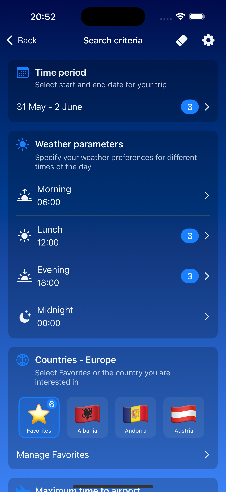
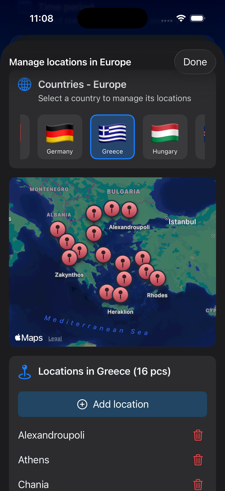
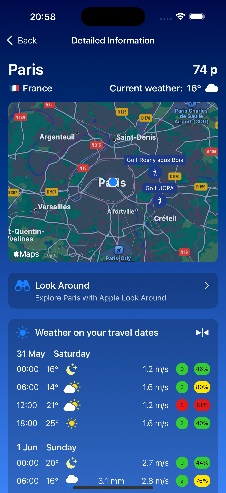
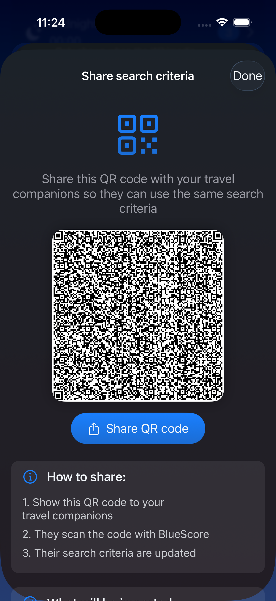

BlueScore
Pick the weather. Find the place.
BlueScore flips the script. Don’t start with a destination — start with the weather you want. Every spot is scored from 0 to 100 against your ideal forecast, up to ten days ahead, across hundreds of curated places and any favourites you add yourself.
Cleanest answer in travel planning. No spreadsheets. No tab-juggling.
Free · Ad-free · Every feature included for everyone
How it starts

Describe the
weather you want.
Set your ideal temperature, cloud cover, precipitation, wind, UV index and humidity for four moments of the day — morning, lunch, evening and midnight. Mix as many parameters as you like, on as many time slots as you like.
There are no caps. Every weather parameter is unlocked for every user from the very first launch — no PRO upgrade required, ever.
Save the profile once. Let it shape every search.
How it scores

Every forecast,
scored 0–100.
BlueScore reads the forecast for every destination across the next ten days, compares it to your profile and assigns a single, honest score from 0 to 100. Highest score wins.
Tap into any destination to see the breakdown by day, by hour, by parameter — so you can spot the calm morning, the warm-evening dinner, or the dry-fairway afternoon at a glance.
No spreadsheets. No comparing ten apps. Just the answer.
Where to go
Curated picks & your
own favourites.
Hundreds of hand-picked destinations are in the catalogue from day one — and you can add any place on the planet as a custom favourite. Both kinds compete in the same ranking.

Hand-picked
Hundreds of
destinations, ready.
Santorini, Biarritz, Costa del Sol, Barcelona — alongside cultural cities, coastal gems, island paradises and golf meccas. Browse by continent, by country, or by gut feel.
Twice as many places per country as the old free tier — for everyone now, with no upgrade prompts.

Or bring your own
Add anywhere
on the planet.
Hometown, summer cabin, future move, that one beach you keep dreaming of? Drop it in as a favourite and BlueScore scores it on every search alongside the curated picks.
No limit on favourites. Add as many as you like — everyone gets the full set.
Inside a forecast
Everything in a forecast.
Nothing missing.
Six parameters, four times of day, ten days ahead — all on one screen.
Four times of day
Morning, lunch, evening and midnight are scored separately so dinner-on-the-terrace evenings and crisp running mornings each get the weight they deserve. Pick which moments matter and BlueScore weighs them in.
Six weather parameters
Temperature, clouds, precipitation, wind, UV index and humidity. Combine any number of them — plus a set of golf-specific parameters for fairway weather. Every parameter is unlocked for every user.
Ten-day window
Forecast from today up to ten days ahead, in detail. Plus sunrise, sunset and local public holidays for every destination — so you never plan a trip on a closed Monday.
Beyond the weather

Not just
a forecast.
For every destination, BlueScore surfaces nearby points of interest in six categories — airports with IATA codes, golf courses with contact details, beaches and their facilities, hiking trails with difficulty levels, national parks and camping sites.
- Filter by category, distance or amenities to focus on what you actually care about.
- Apple Look Around opens a real-world preview of the surroundings without leaving the app.
- Tap to call or email any place that ships its contact details — no copy-pasting.
Your destination, in context.

Share a perfect
search.
Found the configuration that always finds you the right week of beach, the right golfing weekend, the right city break? Share the whole search as a QR code or a file — weather profile, favourites, filters and all.
A friend imports it in one tap and sees exactly the same answer.
For every kind
of trip.
BlueScore is built for the moments when the weather is the deciding factor. Same app, ten different ways to use it.
Eight languages
Travel anywhere.
Read everywhere.
BlueScore speaks your language out of the box — whichever of these eight is set on your iPhone.
Everything that matters.
Nothing locked away.
Ten things BlueScore puts in every user’s hands — all included, all from the first launch.
Every destination gets a single honest score against your weather profile. Highest match wins.
Morning, lunch, evening and midnight are each scored separately and weighted to your priorities.
Temperature, clouds, precipitation, wind, UV and humidity — combinable in any number, on any time slot.
Plan from today up to ten days ahead, with detailed hourly data, sunrise/sunset and local holidays.
Hand-picked destinations across every continent, browsable by region, country or country club.
Add any place on Earth. BlueScore scores it on every search, side by side with the curated picks.
Six POI categories — airports, golf, beaches, trails, national parks, camping — around every destination.
Open a real-world preview of the surroundings of any supported destination, right inside the app.
Send a complete search — profile, favourites, filters — to a friend in one tap. They import and search.
English, Spanish, French, German, Italian, Danish, Norwegian and Swedish — localised end to end.
Get BlueScore
All features.
For everyone.
BlueScore is free for every user. Every feature that used to live behind the PRO upgrade — twice as many places per country, custom favourites, every weather parameter, expanded travel-day forecasts, larger search results, golf-specific parameters and QR/file sharing — is now included from the first launch. No subscription. No upgrade prompts. Just the app.
You bring the trip. We bring the weather.